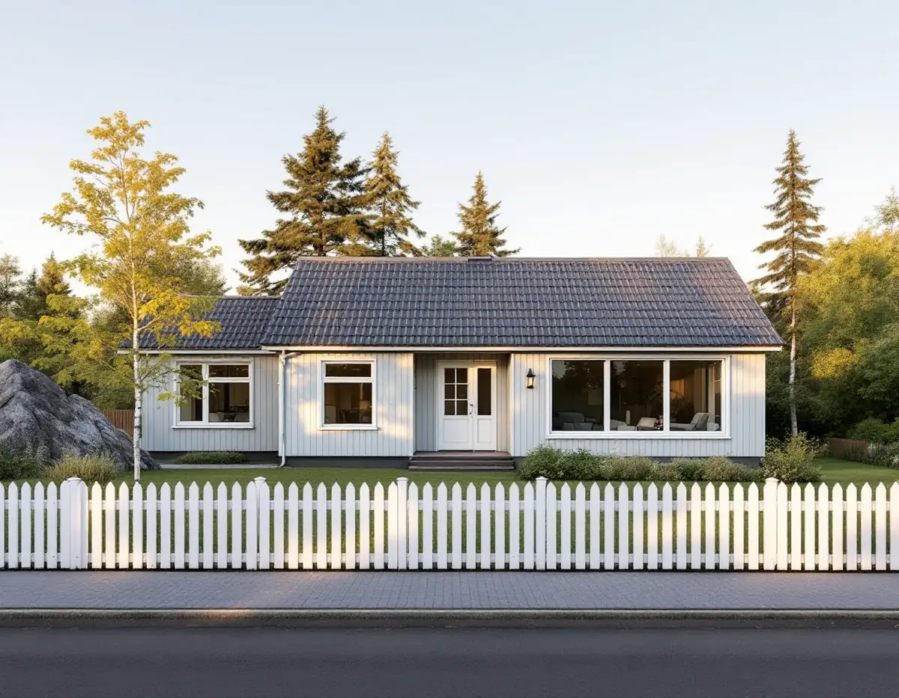

Platsbesök
Vi tittar på huset, tomtgränserna, grannarnas hus och om tomten gränsar mot kommunal mark.
Huddinge har 20 758 bostäder i småhus enligt SCB:s statistik för 2025. Bygger man till eller bygger nytt på en villatomt hamnar man ofta nära någon av grannarna. Geal Entreprenad AB tar hand om tillbyggnader, nya hus på tomten och större ombyggnader som total entreprenad, och en stor del av förarbetet gäller just grannarna, gränsen och ordningen i kommunens handläggning.

Plan- och bygglagen ger inte grannar en generell rätt att tycka till om allt som byggs, skriver Huddinge kommun. Bygglovsavdelningen skickar ändå ut ett grannehörande i vissa fall: vid förhandsbesked, vid nya hus och större tillbyggnader utanför detaljplanerat område, när ansökan inte följer detaljplanen och när någon vill bygga närmare tomtgränsen än 4,5 meter och detaljplanen saknar bestämmelser om avstånd.
Sakägare är bland andra ägare till fastigheter som gränsar till tomten, innehavare av tomträtt, arrende eller servitut och myndigheter med ett särskilt intresse. Rågrannarna är enligt kommunen sakägare i varje ärende som skickas på hörande. De har oftast två veckor på sig att svara via e-tjänsten. Är det svårt att avgöra vilka som berörs kan kommunen i stället kungöra ärendet i tidningen Mitt i Huddinge och på den digitala anslagstavlan.
Kommer en negativ synpunkt in skickas den till dig som söker, så att du kan bemöta den. Du kan då välja att ändra ritningarna eller gå vidare med förslaget som det är. Följer ansökan detaljplanen helt fattas beslutet utan att sakägarna hörs.
För en del lovfria åtgärder är det grannens godkännande som avgör placeringen. Huddinge kommun nämner friggebod, lovbefriat skärmtak och mur eller plank på högst 1,8 meter inom 3,6 meter från bostadshuset för en skyddad uteplats. Hamnar de närmare tomtgränsen än 4,5 meter ska alla ägare till den berörda grannfastigheten godkänna placeringen innan bygget börjar, och godkännandet gäller även om grannen sedan flyttar. Kommunen rekommenderar ett skriftligt medgivande men vill inte ha det inskickat.
För åtgärder som ska anmälas, som kommunen exemplifierar med attefallshus och attefallstillbyggnad, ska medgivandet vara skriftligt och göras på en situationsplan där det nya är inritat på rätt plats och med rätt mått.
Gränsar tomten mot mark som kommunen äger är det mark- och exploateringssektionen som lämnar medgivande. Kommunen skriver att sektionen utreder hur sådana förfrågningar ska hanteras, att utredningen beräknas bli klar i slutet av januari 2027 och att inga grannemedgivanden lämnas under tiden. En friggebod eller tillbyggnad mot en kommunal parkremsa kan alltså behöva placeras om.
Innan vi mäter ut ett nytt hus eller en tillbyggnad nära gränsen behöver gränsen vara känd. Huddinge har en egen lantmäterimyndighet, en av 40 kommunala i landet, som har funnits sedan 1997 och arbetar med kommunens cirka 24 000 fastigheter. Finns gränsmarkeringar är det som utgångspunkt de som visar var gränsen går. Saknas de kan förrättningskartan från när fastigheten bildades innehålla mått och uppgifter om markeringarna.
Har markeringarna försvunnit kan de sättas ut på nytt genom särskild gränsutmärkning, om läget kan räknas fram ur förrättningshandlingarna utan oklarheter. Den som ansöker betalar, och markeringen blir rättsligt gällande. Är läget oklart krävs i stället en fastighetsbestämning. En gränsutvisning, där gränsen visas med träpålar eller sprayfärg, är enklare men inte juridiskt bindande. Den beställs hos kommunens mät- och kartenhet.
Ska tomten delas sker det genom avstyckning i en lantmäteriförrättning, och detaljplanen reglerar bland annat hur stor en tomt minst måste vara. Lantmäterimyndigheten ger kostnadsfri rådgivning i upp till 25 minuter om förrättningsåtgärder.
Ett ärende granskas oftast av en bygglovshandläggare och en byggnadsinspektör. Behöver de nya handlingar försöker kommunen höra av sig inom tre veckor. Ett lovärende ska enligt kommunen ha ett beslut inom tio veckor och en anmälan inom fyra. Hålls inte tiden reduceras avgiften med en femtedel för varje vecka, men tiden räknas om från den dag ärendet blev komplett. Därför lägger vi tid på att ansökan är fullständig, med skalenliga och måttsatta ritningar.
Efter beslutet bokas inspektören för tekniskt samråd, där kontrollplanen och organisationen av bygget gås igenom. För större byggen görs minst ett arbetsplatsbesök, och när arbetet är klart hålls ett slutsamråd på plats innan slutbesked kan ges. Bokningen kan göras tidigast två veckor före mötet, och den luckan planerar vi in i tidplanen.
Före ansökan kan du boka rådgivning med en handläggare, men kommunen påpekar att den ger generella svar och inget besked om lov. Mer om vad som gäller för tillbyggnad i Huddinge finns på en egen sida, och om arbetssättet under byggfirma.
Vi tittar på huset, tomtgränserna, grannarnas hus och om tomten gränsar mot kommunal mark.
Gränsmarkeringar, detaljplan och avstånd kontrolleras innan något ritas.
Byggdelar, installationer och ROT-berättigat arbete redovisas var för sig.
Grannarnas medgivanden tas in där det behövs och ansökan lämnas komplett.
Tekniskt samråd, sedan bygget med en kontakt för alla hantverkare.
Vi förbereder underlaget till slutsamrådet och slutbeskedet.
Rotavdraget är 30 procent av arbetskostnaden, högst 50 000 kronor per person och år och högst 75 000 kronor tillsammans med rutavdrag. Det gäller arbete på plats, inte material eller resor, och du ska äga bostaden när arbetet görs.
En tillbyggnad ger avdrag om någon av dess sidor sitter ihop med husets yttervägg till minst 75 procent, eller om det finns en dörr emellan. Ett helt nytt hus eller en fristående byggnad som en friggebod ger inget avdrag, och inte heller bygglovshandlingar. Vi gör avdraget direkt på fakturan.
Storlek, grundläggning och hur den nya delen ansluts till huset väger tyngst. Avstånd till gränser och grannars medgivanden kan styra placeringen, och därmed hur mycket mark som behöver göras i ordning. Efter ett gratis platsbesök får du ett skriftligt kostnadsförslag.
Total entreprenad för villan.
Byggfirma →Takbyte, takbesiktning och plåtarbeten.
Takläggare i Huddinge →Stuvsta, Snättringe och Skogås.
Takrenovering i Huddinge →Avlopp, egen brunn och ritningar.
Attefallshus i Huddinge →Egnahem, grupphus och permanentade stugor.
Badrumsrenovering i Huddinge →Nytt trä i en gammal fasad.
Fasadmålning i Huddinge →Villor, grupphus och fritidshus i Huddinge.
Fasadrenovering i Huddinge →Egnahem, grupphus och 70-talsvillor.
Fönsterbyte i Huddinge →Okopplade bågar, tätning och lagning av bottenstycken.
Fönsterrenovering i Huddinge →Grupphus, radhus och kedjehus i Huddinge.
Golvläggare i Huddinge →Slipa golvet och byt ytbehandling.
Golvslipning i Huddinge →Grupphus, egnahem och stugor.
Köksrenovering i Huddinge →Fasad, fönster och rum i Huddinge.
Målare i Huddinge →Rännor, dagvatten och brutna tak.
Plåtslagare i Huddinge →Altaner, förråd och gäststugor.
Snickare i Huddinge →Tyngre tak, stugor och landsbygd.
Takbyte i Huddinge →Ny tapet på lagad spännpapp.
Tapetsering i Huddinge →Råd för tre epoker av småhus.
Tillbyggnad i Huddinge →Rekordårens hus inifrån och ut.
Totalrenovering i Huddinge →